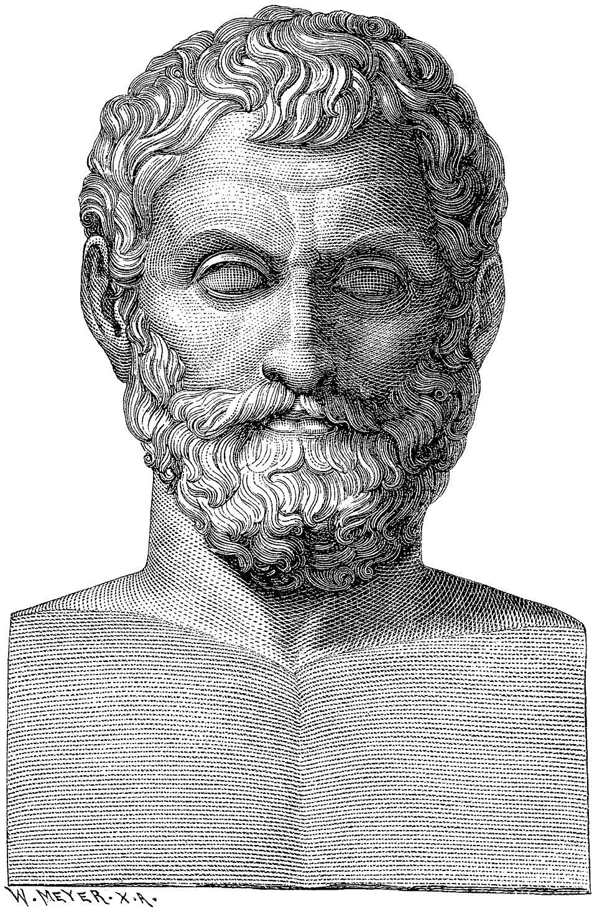
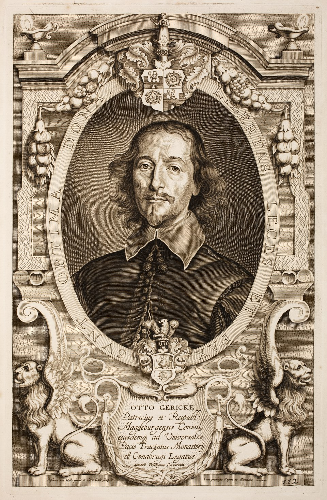
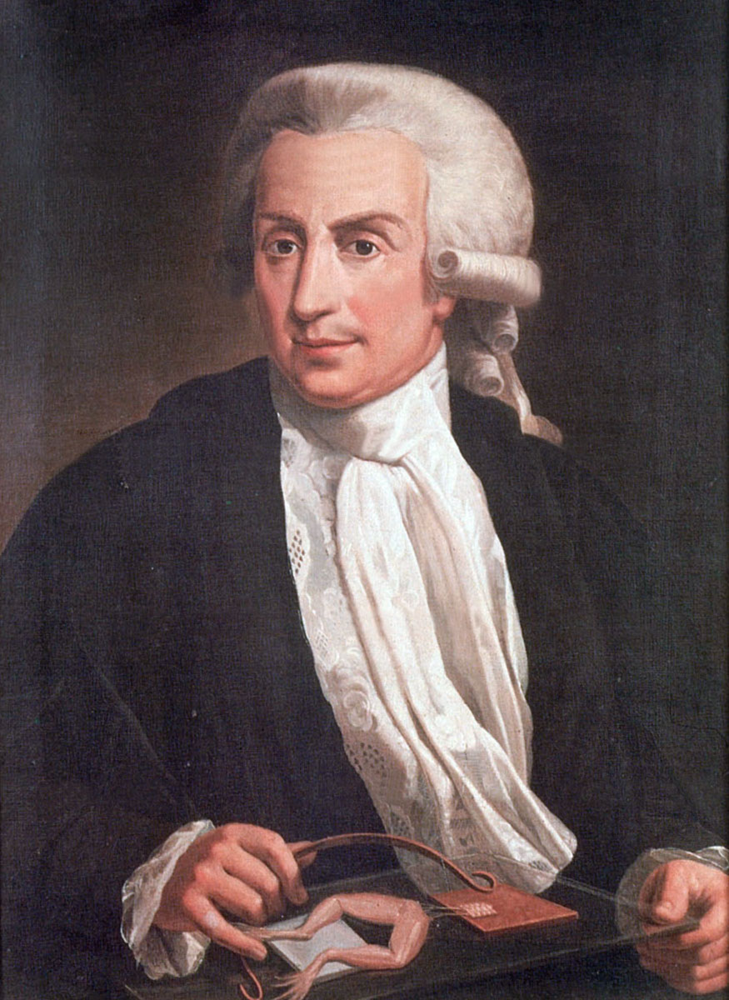
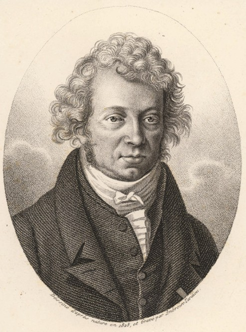

HISTORY OF ELECTRICITY
자연의 경이로움에서 현대 문명의 동력이 되기까지,
인류의 삶을 뒤바꾼 전기와 전자기학의 위대한 역사를 기록합니다.

BC 600경
밀레토스의 탈레스 (Thales)
"전기학의 가장 오래된 뿌리, 호박의 마찰"고대 그리스의 철학자 탈레스는 호박(Amber)을 모피로 문지르면 깃털이나 가벼운 물질이 달라붙는 현상을 관찰했습니다. 비록 그는 이 끌림을 호박 속에 깃든 '영혼'의 작용이라고 믿었지만, 자연 현상을 단순히 신화로 치부하지 않고 관찰하려 했다는 점에서 큰 의의가 있습니다. 이는 번개나 정전기를 물질 고유의 성질로 이해하려 한 최초의 과학적 시도로 평가받습니다.
- 역사적 어원전기를 뜻하는 영단어 'Electricity'는 호박을 의미하는 그리스어 'Elektron'에서 유래했습니다.

1600년
윌리엄 길버트 (William Gilbert)
"자석학의 아버지이자 근대 전자기학의 선구자"엘리자베스 1세의 주치의였던 길버트는 명저 [자석에 관하여(De Magnete)]를 통해 지구가 하나의 거대한 자석임을 주장하며 나침반의 원리를 과학적으로 규명했습니다. 또한 탈레스의 호박 외에도 유리나 유황 등 다른 물질에서도 마찰에 의해 힘이 발생함을 실험으로 증명했습니다. 특히 그는 호박의 정전기적 끌림과 자석의 자기적 끌림이 근본적으로 다른 현상임을 인류 최초로 명확히 구분해 냈습니다.
- 주요 공헌마찰로 발생하는 힘을 'Electricus(전기적)'라고 명명하여 학술적 용어를 확립했습니다.
- 실험 기구회전하는 금속 바늘을 이용한 전기 검출기 '베르소리움(Versorium)'을 발명했습니다.

1660년경
오토 폰 게리케 (Otto von Guericke)
"최초의 정전기 발생 장치 발명"마그데부르크의 시장이자 과학자였던 게리케는 유황을 녹여 만든 공을 회전시키며 마찰을 가해 강력한 정전기를 발생시키는 장치를 고안했습니다. 이것은 인류 최초의 인공적인 '발전기(마찰 기전기)' 형태였습니다. 그는 이 실험을 통해 정전기가 찌릿하는 소리를 내며 불꽃을 일으키는 것을 관찰했고, 이 현상이 하늘의 번개와 본질적으로 같을 수 있다는 획기적인 추론을 남겼습니다.
- 발견의 의의정전기적 인력뿐만 아니라 물체가 서로 밀어내는 '반발력'도 존재함을 실험으로 보였습니다.

1729년
스티븐 그레이 (Stephen Gray)
"전기가 흐르는 길, 도체와 절연체의 발견"그레이는 전기가 물체에 멈춰 있는 것만이 아니라, 특정한 물질을 통해서는 먼 곳까지 흐르고 어떤 물질에서는 막힌다는 사실을 발견했습니다. 그는 공중에 비단실로 매달린 소년(Flying Boy 실험)에게 전기를 전달하거나 200m가 넘는 마끈을 이용하여 전기를 먼 곳으로 보내는 실험에 성공했습니다. 이는 전기가 단순히 국소적인 정전기가 아니라 공간을 넘어 정보나 에너지를 전달할 수 있는 '흐름'의 성질을 가졌음을 증명한 중대한 사건이었습니다.
- 도체와 절연체금속이나 젖은 실은 전기를 잘 전달(도체)하지만, 비단실이나 유리는 막는다(절연체)는 성질을 명확히 분류했습니다.

1752년
벤자민 프랭클린 (Benjamin Franklin)
"하늘의 번개를 과학의 영역으로 끌어내리다"프랭클린은 뇌우가 치는 날 연을 날려 번개가 구름 속에 축적된 거대한 정전기 방전 현상이라는 것을 실증했습니다. 그는 구름의 대전된 전하를 연줄을 통해 모아 라이덴병에 저장함으로써 번개와 정전기가 동일한 에너지임을 증명했습니다. 이를 바탕으로 벼락으로부터 건물을 보호하는 '피뢰침'을 발명하여 수많은 인명을 구했으며, 전기를 긍정적(+)과 부정적(-)인 성질을 가진 유체로 모델링했습니다.
- 표준 용어오늘날 우리가 쓰는 양전하(+), 음전하(-), 배터리(Battery), 충전(Charge) 등의 핵심 용어를 확립했습니다.
- 수식전하량 보존의 법칙: ΣQ_initial = ΣQ_final

1780년
루이지 갈바니 (Luigi Galvani)
"개구리 뒷다리와 생체 전기의 발견"해부학자였던 갈바니는 해부한 개구리의 뒷다리 신경에 서로 다른 두 금속을 접촉시키면 근육이 강하게 수축하며 꿈틀거리는 현상을 발견했습니다. 그는 이것이 동물의 신경과 근육 속에 내재된 '동물 전기(Animal Electricity)'가 작용한 결과라고 확신했습니다. 비록 원인 해석에는 오류가 있었지만, 이 위대한 발견은 훗날 신경 과학과 생체 전기학이라는 완전히 새로운 의학 분야를 탄생시키는 결정적 계기가 되었습니다.
- 문화적 영향갈바니의 실험은 죽은 생명체에 전기로 생기를 불어넣을 수 있다는 상상력을 자극하여 소설 [프랑켄슈타인]의 영감이 되었습니다.

1800년
알레산드로 볼타 (Alessandro Volta)
"갈바니와의 논쟁 끝에 탄생한 인류 최초의 배터리"볼타는 개구리 다리의 경련이 동물의 생명력 때문이 아니라, 서로 다른 두 금속(구리와 아연)과 체액(전해질)이 만나 발생한 화학적 전압 때문임을 밝혀냈습니다. 이를 증명하기 위해 금속판 사이에 소금물에 적신 헝겊을 번갈아 층층이 쌓아 올린 '볼타 전지(Voltaic Pile)'를 발명했습니다. 이 장치는 인류에게 순식간에 튀고 사라지는 정전기가 아닌, '원할 때 지속적으로 흐르는 전류'를 최초로 제공했습니다.
- 단위의 기원전기적 위치 에너지의 차이, 즉 전압을 측정하는 단위인 '볼트(V)'는 그의 이름을 기리기 위해 채택되었습니다.
- 전공 수식전압과 에너지의 관계: V = ΔW / ΔQ

1820년
한스 크리스티안 외르스테드 (H.C. Ørsted)
"전기와 자기의 놀라운 연결고리를 발견하다"외르스테드는 대학교 강의 중 전원 스위치를 켜 전류가 흐르도록 한 순간, 전선 근처에 놓여 있던 나침반 바늘이 수직으로 틀어지는 현상을 발견했습니다. 수 세기 동안 과학자들은 전기 현상과 자기 현상을 전혀 관계없는 독립된 힘으로 생각했으나, 이 우연하면서도 예리한 관찰을 통해 전기가 자기를 만들어낼 수 있다는 놀라운 사실이 입증되었습니다. 이로써 '전자기학'의 서막이 올랐습니다.
- 학문적 의의전기와 자기력을 하나의 현상으로 통합하는 현대 물리학의 거대한 초석을 놓았습니다.
- 물리 법칙직선 도선 주위의 자기장 세기: B = μ₀I / 2πr

1827년
앙드레 마리 앙페르 (Ampère)
"전자기학의 뉴턴, 자기 현상을 수학으로 완성하다"외르스테드의 발견 소식을 접한 프랑스의 천재 수학자 앙페르는 단 일주일 만에 후속 실험을 설계하고 이를 수학적 법칙으로 정리해 냈습니다. 그는 전류가 흐르는 방향과 생성되는 자기장의 방향 사이의 관계를 나타내는 '오른나사 법칙'을 확립했습니다. 더 나아가, 자석의 본질이 물질 내부의 미세한 원자 전류 때문일 것이라는 시대를 앞서간 분자 전류 가설을 제시하여 물리 이론의 깊이를 더했습니다.
- 전류의 단위1초 동안 도선을 통과하는 전하의 양을 나타내는 전류의 세기 단위 '암페어(A)'는 그의 이름을 딴 것입니다.
- 핵심 수식앙페르 회로 법칙: ∮B·dl = μ₀I

1831년
마이클 패러데이 (Michael Faraday)
"자기장에서 전기를 유도하다, 현대 전력망의 아버지"정규 교육을 받지 못한 제본공 출신의 패러데이는 누구보다 직관적이고 천재적인 통찰력을 가졌습니다. 그는 외르스테드의 발견을 뒤집어 '자석을 움직여서 전기를 만들 수는 없을까?'라는 질문을 품었고, 코일 주변에서 자석을 이동시키면 전류가 흐르는 '전자기 유도' 현상을 발견했습니다. 이 위대한 발견은 운동 에너지를 전기 에너지로 변환하는 최초의 발전기(Dynamo) 탄생으로 이어져, 인류가 전기를 무한히 생산할 수 있게 만들었습니다.
- 과학적 공헌보이지 않는 전기와 자기의 힘을 시각화한 '장(Field)'과 '역선(Lines of force)'의 개념을 처음 도입했습니다.
- 물리 수식패러데이 전자기 유도 법칙: ε = -N(dΦ/dt)

1864년
제임스 클러크 맥스웰 (Maxwell)
"전자기학의 대통합, 빛의 진정한 정체를 밝히다"스코틀랜드의 이론물리학자 맥스웰은 패러데이가 남긴 실험적 사실들과 장(Field)의 개념을 정교한 수학적 언어로 번역했습니다. 그는 기존 법칙의 모순을 해결하기 위해 '변위 전류'라는 독창적인 개념을 도입하여 전자기학을 4개의 아름다운 편미분 방정식으로 완성했습니다. 이 방정식을 풀면서 그는 전자기파의 이동 속도가 빛의 속도와 정확히 일치함을 발견하였고, 마침내 "빛은 곧 전자기파의 일종이다"라는 역사적인 결론을 도출했습니다.
- 평가뉴턴의 역학과 아인슈타인의 상대성이론을 잇는 가장 위대한 물리학적 성취로 평가받으며 무선 통신의 이론적 기반이 되었습니다.

1879년
토머스 에디슨 (Thomas Edison)
"밤을 낮으로 바꾼 발명왕, 전력망 시대를 열다"에디슨은 전구를 처음 발명한 인물은 아니지만, 수천 번의 실험 끝에 대나무 탄소 필라멘트를 적용하여 일반 가정에서도 오래 쓸 수 있는 '상용화된 실용적인 백열전구'를 만들어냈습니다. 그의 가장 위대한 업적은 전구 단품 개발에 그치지 않고, 세계 최초의 상업용 중앙 발전소(펄 스트리트 발전소)를 세워 도시 전체에 전기를 배분하는 시스템을 구축했다는 점입니다.
- 직류 시스템안전성을 이유로 직류(DC) 송전 방식을 고수하였고, 이는 훗날 테슬라의 교류 진영과 치열한 '전류 전쟁'을 벌이는 원인이 되었습니다.
- 공학 수식전력 소비 공식: P = V · I = I²R

1887년
니콜라 테슬라 (Nikola Tesla)
"현대 교류 전력 그리드의 진정한 설계자"에디슨의 회사에서 일했던 테슬라는 직류 시스템이 거리가 멀어지면 전압이 심하게 떨어진다는 치명적인 한계를 깨달았습니다. 그는 변압기를 이용해 전압을 쉽게 높이거나 낮출 수 있는 3상 교류(AC) 시스템과 유도 전동기를 발명했습니다. 장거리 송전에 압도적으로 유리했던 그의 교류 방식은 나이아가라 폭포 발전소 채택을 기점으로 전류 전쟁에서 승리하였고, 오늘날 전 세계 전력망의 표준이 되었습니다.
- 미래적 비전그는 전선 없이 에너지를 보내는 무선 전력 전송을 꿈꾸었고, 레이더와 라디오 통신의 핵심 특허를 설계한 천재 발명가였습니다.

1887년
하인리히 헤르츠 (Heinrich Hertz)
"보이지 않는 전자기 파동을 공간의 실체로 소환하다"독일의 물리학자 헤르츠는 맥스웰이 수식으로만 예언했던 '전자기파'의 존재를 실험을 통해 최초로 증명해 냈습니다. 그는 실험실 한쪽에서 고전압 불꽃 방전을 일으켰고, 떨어져 있던 금속 고리(수신기)에서도 유도 불꽃이 튀는 것을 확인했습니다. 비록 그는 "이 현상이 실생활에 당장 유용할지는 모르겠다"고 겸손하게 말했지만, 이는 무선 전신과 라디오, 현대 이동통신의 시대를 여는 위대한 불꽃이었습니다.
- 주파수의 단위파동이 1초 동안 진동하는 횟수를 나타내는 진동수 단위 '헤르츠(Hz)'는 그의 업적을 기린 것입니다.
- 물리 법칙파동의 속도 공식: v = f · λ

1947년
트랜지스터의 탄생 (반도체 혁명)
"전기는 동력을 넘어, 복잡한 정보를 담는 두뇌가 되다"벨 연구소의 윌리엄 쇼클리, 존 바딘, 월터 브래튼은 부피가 크고 열이 많이 나며 쉽게 고장 나던 진공관을 대체할 손톱만 한 고체 소자 '트랜지스터'를 발명했습니다. 게르마늄과 실리콘 등의 반도체 물질을 이용한 이 장치는 미세한 전압으로 전류의 흐름을 통제하여 스위칭(0과 1)과 신호 증폭 작용을 완벽히 수행해 냈습니다. 이 발명은 정보화 시대의 빅뱅을 일으켜 현대 디지털 문명의 기반이 되었습니다.
- 기술적 의의현대 모든 컴퓨터의 CPU와 스마트폰, 전자 기기를 구성하는 가장 핵심적이고 기초적인 부품입니다.